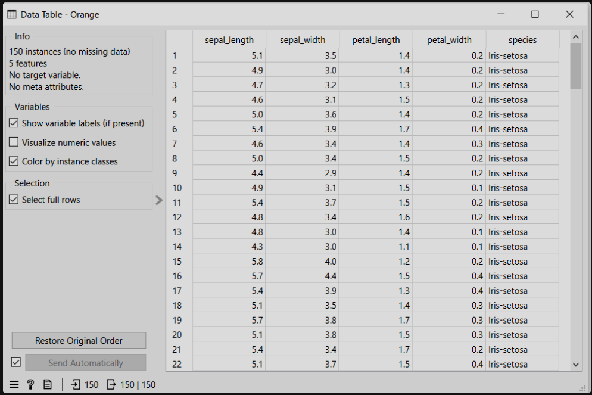

Data Collection#
Langkah pertama dalam Data Understanding adalah pengumpulan data (data collection). Pada tahap ini, data dikumpulkan dari berbagai sumber yang relevan, seperti database, file CSV atau Excel, API, maupun sistem internal organisasi. Maksud dari langkah ini adalah memastikan bahwa data yang digunakan sesuai dengan tujuan penelitian, lengkap, dan representatif terhadap permasalahan yang akan dianalisis. Tanpa proses pengumpulan yang tepat, hasil analisis berisiko tidak relevan dengan kebutuhan penelitian.
Tujuan Data Collection#
Berikut adalah tujuan Data Collection:
Memperoleh data yang relevan dengan permasalahan atau tujuan penelitian.
Mengumpulkan data dari sumber yang terpercaya, seperti database, file CSV/Excel, API, atau sistem internal.
Memastikan kelengkapan data, baik dari segi jumlah sampel maupun variabel yang dibutuhkan.
Menjamin data bersifat representatif, sehingga dapat menggambarkan kondisi sebenarnya.
Mendukung proses analisis selanjutnya, agar tahap deskripsi, eksplorasi, dan pemodelan dapat dilakukan dengan tepat.
Mengurangi risiko kesalahan analisis, karena data yang digunakan sudah sesuai dengan kebutuhan dan tujuan penelitian.
import pandas as pd
df = pd.read_csv('../IRIS.csv')
df.info()
<class 'pandas.core.frame.DataFrame'>
RangeIndex: 150 entries, 0 to 149
Data columns (total 5 columns):
# Column Non-Null Count Dtype
--- ------ -------------- -----
0 sepal_length 150 non-null float64
1 sepal_width 150 non-null float64
2 petal_length 150 non-null float64
3 petal_width 150 non-null float64
4 species 150 non-null object
dtypes: float64(4), object(1)
memory usage: 6.0+ KB
Informasi Dataset#
df.head()
| sepal_length | sepal_width | petal_length | petal_width | species | |
|---|---|---|---|---|---|
| 0 | 5.1 | 3.5 | 1.4 | 0.2 | Iris-setosa |
| 1 | 4.9 | 3.0 | 1.4 | 0.2 | Iris-setosa |
| 2 | 4.7 | 3.2 | 1.3 | 0.2 | Iris-setosa |
| 3 | 4.6 | 3.1 | 1.5 | 0.2 | Iris-setosa |
| 4 | 5.0 | 3.6 | 1.4 | 0.2 | Iris-setosa |
Statistik Deskriptif#
df.describe(include='all')
| sepal_length | sepal_width | petal_length | petal_width | species | |
|---|---|---|---|---|---|
| count | 150.000000 | 150.000000 | 150.000000 | 150.000000 | 150 |
| unique | NaN | NaN | NaN | NaN | 3 |
| top | NaN | NaN | NaN | NaN | Iris-setosa |
| freq | NaN | NaN | NaN | NaN | 50 |
| mean | 5.843333 | 3.054000 | 3.758667 | 1.198667 | NaN |
| std | 0.828066 | 0.433594 | 1.764420 | 0.763161 | NaN |
| min | 4.300000 | 2.000000 | 1.000000 | 0.100000 | NaN |
| 25% | 5.100000 | 2.800000 | 1.600000 | 0.300000 | NaN |
| 50% | 5.800000 | 3.000000 | 4.350000 | 1.300000 | NaN |
| 75% | 6.400000 | 3.300000 | 5.100000 | 1.800000 | NaN |
| max | 7.900000 | 4.400000 | 6.900000 | 2.500000 | NaN |
Missing Value#
import numpy as np
df.loc[10, 'sepal_length'] = np.nan
df.loc[25, 'petal_width'] = np.nan
df.loc[50, 'sepal_width'] = np.nan
print("Jumlah Missing Value per Kolom:")
print(df.isnull().sum())
Jumlah Missing Value per Kolom:
sepal_length 1
sepal_width 1
petal_length 0
petal_width 1
species 0
dtype: int64
df.fillna(df.mean(numeric_only=True), inplace=True)
print("Setelah Imputasi:")
print(df.isnull().sum())
Setelah Imputasi:
sepal_length 0
sepal_width 0
petal_length 0
petal_width 0
species 0
dtype: int64
Jarak Euclidean#
from scipy.spatial.distance import euclidean
data1 = df.iloc[0, 0:4]
data2 = df.iloc[1, 0:4]
jarak = euclidean(data1, data2)
print("Jarak Euclidean antara data 1 dan data 2:", jarak)
Jarak Euclidean antara data 1 dan data 2: 0.5385164807134502
Jarak Euclidean digunakan untuk mengukur tingkat kemiripan antar data berdasarkan fitur numerik. Semakin kecil nilai jarak, semakin mirip dua data tersebut.
from scipy.spatial.distance import pdist, squareform
X = df.iloc[:, 0:4].values
distance_matrix = squareform(pdist(X, metric='euclidean'))
print("Shape Distance Matrix:", distance_matrix.shape)
Shape Distance Matrix: (150, 150)
Distance Matrix#
import numpy as np
from scipy.spatial.distance import pdist, squareform
X = df.iloc[:, 0:4]
X_biner = (X > X.mean()).astype(int)
print(X_biner.head())
sepal_length sepal_width petal_length petal_width
0 0 1 0 0
1 0 0 0 0
2 0 1 0 0
3 0 1 0 0
4 0 1 0 0
distance_jaccard = squareform(pdist(X_biner, metric='jaccard'))
print("Shape Distance Matrix Jaccard:", distance_jaccard.shape)
Shape Distance Matrix Jaccard: (150, 150)
Jaccard Distance digunakan untuk mengukur ketidaksamaan antara dua data biner. Nilai 0 berarti identik, sedangkan semakin mendekati 1 berarti semakin berbeda.
Rumus Jaccard :
Dimana:
a = jumlah atribut bernilai 1 pada kedua data
b dan c = jumlah atribut yang berbeda
df['ukuran_kategori'] = pd.cut(
df['sepal_length'],
bins=[0, 5, 6.5, 10],
labels=['Kecil', 'Sedang', 'Besar']
)
df[['sepal_length', 'ukuran_kategori']].head()
| sepal_length | ukuran_kategori | |
|---|---|---|
| 0 | 5.1 | Sedang |
| 1 | 4.9 | Kecil |
| 2 | 4.7 | Kecil |
| 3 | 4.6 | Kecil |
| 4 | 5.0 | Kecil |
df['is_setosa'] = (df['species'] == 'Iris-setosa').astype(int)
df[['species', 'is_setosa']].head()
| species | is_setosa | |
|---|---|---|
| 0 | Iris-setosa | 1 |
| 1 | Iris-setosa | 1 |
| 2 | Iris-setosa | 1 |
| 3 | Iris-setosa | 1 |
| 4 | Iris-setosa | 1 |
df.info()
<class 'pandas.core.frame.DataFrame'>
RangeIndex: 150 entries, 0 to 149
Data columns (total 7 columns):
# Column Non-Null Count Dtype
--- ------ -------------- -----
0 sepal_length 150 non-null float64
1 sepal_width 150 non-null float64
2 petal_length 150 non-null float64
3 petal_width 150 non-null float64
4 species 150 non-null object
5 ukuran_kategori 150 non-null category
6 is_setosa 150 non-null int64
dtypes: category(1), float64(4), int64(1), object(1)
memory usage: 7.4+ KB
Dataset dimodifikasi menjadi data campuran dengan menambahkan variabel ordinal (ukuran_kategori) dan variabel biner (is_setosa). Penambahan ini dilakukan untuk mensimulasikan kondisi dataset nyata yang umumnya terdiri dari berbagai tipe data, seperti numerik, nominal, ordinal, dan biner.
Variabel ukuran_kategori dibentuk berdasarkan pengelompokan nilai sepal_length ke dalam kategori Kecil, Sedang, dan Besar, yang memiliki urutan (ordinal). Sedangkan variabel is_setosa merupakan representasi biner dari atribut species, dengan nilai 1 untuk Iris-setosa dan 0 untuk spesies lainnya.
Dengan modifikasi ini, dataset yang awalnya hanya terdiri dari fitur numerik dan nominal kini menjadi dataset campuran, sehingga dapat digunakan untuk analisis jarak dan metode pengolahan data yang mendukung berbagai tipe atribut.
from IPython.display import Image
Image('data_orange.png')

import pandas as pd
df = pd.read_csv("../IRIS.csv")
kolom = df['sepal_width']
print("Jumlah data :", kolom.count())
print("Rata-rata :", round(kolom.mean(), 2))
print("Nilai minimal :", kolom.min())
print("Q1 :", kolom.quantile(0.25))
print("Q2 (Median) :", kolom.quantile(0.5))
print("Q3 :", kolom.quantile(0.75))
print("Nilai maksimal :", kolom.max())
print("Kemencengan (skew) :", round(kolom.skew(), 2))
mode = kolom.mode()
print("Nilai modus :", mode.values[0])
print("Jumlah modus :", kolom.value_counts()[mode.values[0]])
print("Standar deviasi :", round(kolom.std(), 2))
print("Variansi :", round(kolom.var(), 2))
Jumlah data : 150
Rata-rata : 3.05
Nilai minimal : 2.0
Q1 : 2.8
Q2 (Median) : 3.0
Q3 : 3.3
Nilai maksimal : 4.4
Kemencengan (skew) : 0.33
Nilai modus : 3.0
Jumlah modus : 26
Standar deviasi : 0.43
Variansi : 0.19